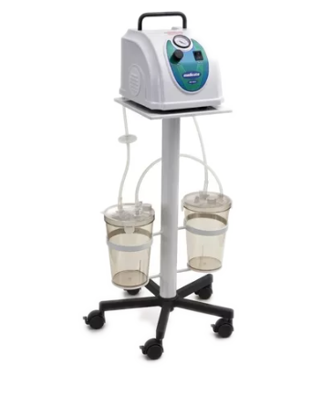

MD600 - BOMBA VÁCUO ASPIRADORA MEDICATE - 6 LITROS
Com design ultramoderno o aspirador cirúrgico de sangue e saliva MD600 é indicado para procedimentos cirúrgicos de pequeno a grande porte, ideal para uso em clínicas e hospitais.
Projetado para aspiração de líquidos e secreções, pode ser utilizado em pequenas, médias e grandes cirurgias, pois utiliza um motor elétrico de alto rendimento com sistema compressor oscilante de potência nominal total de 200W ou aprox. 1/4 CV, vácuo de até 25 in Hg e fluxo de ar em torno de 70L/min, proporcionando uma aspiração contínua, suave e silenciosa.
Desenvolvido para oferecer maior segurança ao usuário o MD600 é bivolt automático, possui vacuômetro e regulador e de vácuo, 2 frascos coletores de policarbonato autoclavável com capacidade de 3 litros cada e tampa com válvula de segurança contra trasbordamento. Além disso, também conta com um filtro bacterial viral hidrofóbico para proteger o equipamento da entrada de sujeira, líquidos e secreções.
Possui pedal de acionamento e suporte para transporte metálico com rodízios com trava.
Design moderno
Leve e portátil
Válvula de segurança
Contra transbordamento
Frascos coletores de 3L
Autoclaváveis
Bivolt 127/220V através de chave seletora
Pedal de acionamento e suporte com rodízios
Opcionais
Segurança
Fabricação nacional com Certificação Inmetro
Conteúdo da embalagem:
01 Bomba vácuo aspiradora com alça para transporte 02 Frascos coletor de 3L (autoclaváveis)
01 Tampa de plástico com válvula de segurança 01 Filtro bacterial viral hidrofóbico 01 Mangueiras de silicone de 2m – paciente 01 Mangueiras de silicone – vácuo 01 Pedal de acionamento 01 Suporte metálico com 5 rodízios com trava